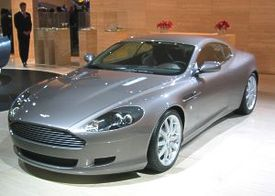
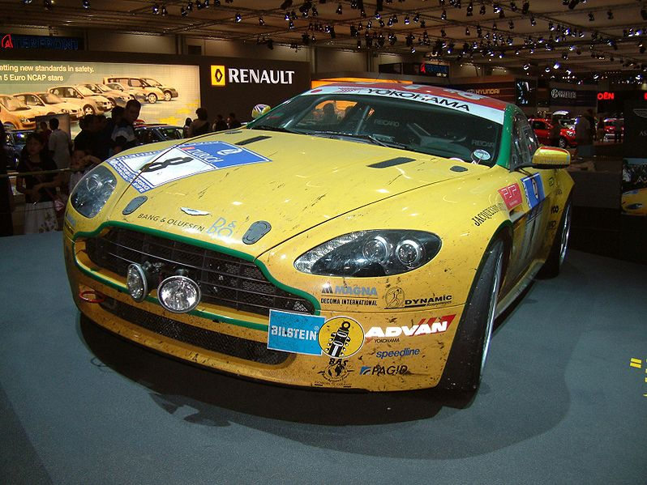
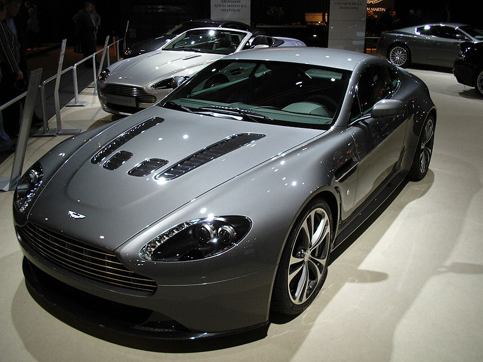
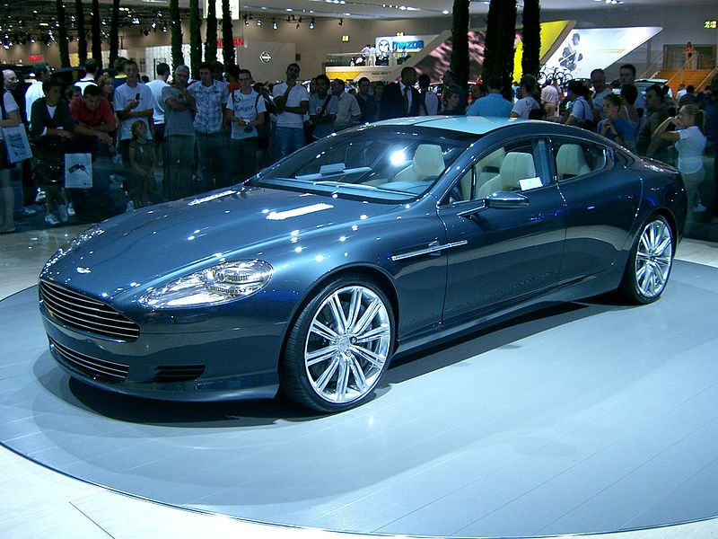
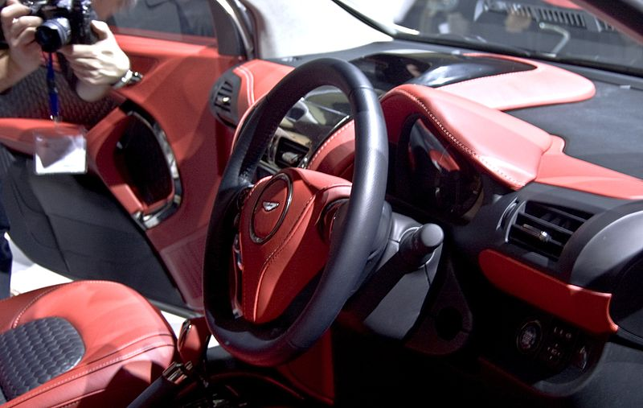
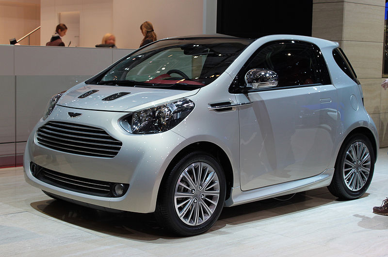
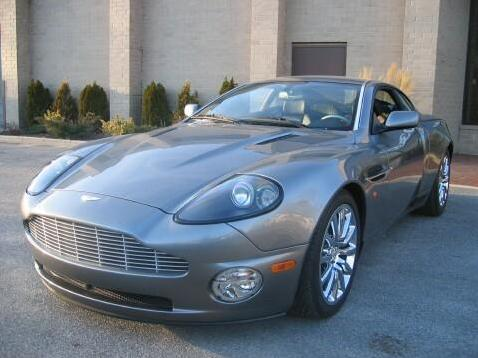

Modelos actuales
Aston Martin DB9
El Aston Martin DB9 es un automóvil deportivo de gran turismo lanzado por el fabricante inglés Aston Martin en el año 2004. Es el primer automóvil en salir de la nueva fábrica de Aston Martin en Gaydon. Al igual que sus predecesores, el nombre "DB" alude a David Brown, antiguo propietario de Aston Martin. Fue diseñado por Ian Callum y Henrik Fisker y reemplazó al descontinuado Aston Martin DB7. Entre sus contrincantes se hallan el Bentley Continental GT, el BMW Serie 6, el Ferrari 612 Scaglietti, el Jaguar XK, el Maserati GranTurismo y el Mercedes-Benz Clase CL.
El DB9 tiene las variantes de carrocería cupé y descapotable (comercializada como "DB9 Volante"). Ambas usan un motor gasolina V12 de 6.0 litros de cilindrada y 450 CV de potencia máxima, proveniente del Aston Martin V12 Vanquish. Alcanza una velocidad máxima de 306 km/h, y acelera de 0 a 100 km/h en 4,6 segundos.
Este mismo auto ha sido utilizado en las sagas tuning de Need For Speed desde Most Wanted (donde es el auto de uno de los miembros de la blacklist), Carbon (Auto del jefe de la pandilla TFK), entre otros donde es un auto con un muy buen desempeño en todas las carreras.
| Ficha Técnica |
DB9 (2008) |
| Motor |
V12 a 90º |
| Cilindrada |
5.935 cc |
| Alimentación |
iny directa |
| Distribución |
4 válvulas por cilindro. dos árboles de levas en culata |
| Potencia máxima |
480 CV a 6.000 rpm |
| Velocidad máxima |
306km/h |
| Tracción |
Tracción Trasera, control de estabilidad |
| Par máximo |
600 Nm (61,22 kgm) a 5.000 rpm |
| Transmisión Manual |
Seis marchas más reversa |
| Aceleración |
0-100 km/h 4.6 s |
| Consumo medio |
(l/100 km) man (18.7 l/100 km) aut (15.6/100 km) |
| Emisiones de CO2 |
man (421 g/km) aut (394 g/km) |
Aston martin V8
El Aston Martin Vantage monta una versión especial del AJ-V8 de Jaguar. Este se aumenta hasta 4,3 L (4280 cc) produciendo 380 HP (283 kW) a 7000 rpm y 410 Nm a 5000 rpm.
Este motor es único de Aston Martin con lubricación por cárter seco, lo cual le permite ser montado muy bajo para reducir el centro de gravedad. El motor es ensamblado a mano en la instalación de AM en Colonia, Alemania, donde también se construye el V12 del Aston Martin DB9. El bloque de cilindros, la culata, el cigüeñal, las bielas, los pistones, los árboles de levas, los colectores de admisión y de escape, el sistema de lubricación del motor y todas son manufacturadas por Aston Martin.
En mayo de 2008, Aston Martin dio a conocer el nuevo motor que utiliza por primera vez cilindros de fundición en línea. Esto permitió una mayor capacidad que fue de 4.7L para el V8 Vantage. La potencia aumento ha 420 HP.2 Un aumento del 11% sobre el anterior motor de 4.3L y 470 Nm de par máximo con un aumento del 15%.
Aplicaciones:
2005-presente de Aston Martin V8 Vantage.
Aston martin V12
El Aston Martin Vantage V12 utiliza el mismo V12 que el DB9 o DBS pero con 520 HP y 570 Nm. Pasa de 0 a 100 km/h en 4,1 segundos y su velocidad máxima es de 305 km/h. Su producción será limitada a 1000 unidades.
Su peso es de 1755 kg, el motor solo es 100 kilos más pesado en relación la versión V8. Otros cambios son la carrocería, que va 15 mm más cerca del suelo, los muelles son más duros en un 45% y las barras estabilizadoras son menos flexibles, en un 15% en la delantera y un 75% en la trasera.
| Ficha Técnica |
Vantage V8 |
Vantage V12 |
| Motor |
V8 a 90º |
V12 a 90º |
| Cilindrada |
4.735 cc |
5.935 cc |
| Alimentación |
inyección multipunto |
iny indirecta, admisión variable |
| Distribución |
4 válvulas por cilindro, Doble árbol de levas en cabeza, Distribución variable |
4 válvulas por cilindro, dos árboles de levas en cada culata |
| Potencia máxima |
420 CV a 7000 rpm |
517 CV a 6500 rpm |
| Par máximo |
470 Nm (47,96 kgm) a 5750 rpm |
570 Nm (58,16 kgm) a 5750 rpm |
| Transmisión |
manual y automática, ambas de seis marchas más reversa |
manual, de seis marchas más reversa |
| Tracción |
trasera |
trasera |
| Aceleración 0-100 km/h |
4,8 s |
4,2 s |
| Velocidad máxima |
290 km/h |
305 km/h |
| Consumo medio (L/100 km) |
man (13,9 L/100 km) aut (13,2 L/100 km) |
man (16,4 L/100 km) |
| Emisiones de CO2 |
man (328 g/km) aut (312 g/km) |
man (388 g/km) |
Aston martin Rapide
El Aston Martin Rapide es un automóvil del segmento F desarrollado por la marca inglesa Aston Martin y presentado en el Salón del Automóvil de Detroit de 2006. Su nombre hace referencia al Lagonda Rapide, un sedán producido por Lagonda, una marca que ahora forma parte de Aston Martin.
El Rapide es un sedán de cuatro puertas y cuatro plazas, basado en el deportivo Aston Martin DB9. Su motor de gasolina es un V12 de 6,0 litros de cilindrada y 470 CV de potencia máxima. Dado que la luneta trasera está muy inclinada y curvada, se ha comparado al Rapide con un cupé.
El Aston Martin Rapide se pondrá a la venta a lo largo de 2010 para competir con el Porsche Panamera, el Mercedes-Benz Clase CLS y el Maserati Quattroporte. Ha anunciado que se fabricará en una planta de Magna Steyr en Graz, Austria.
| Ficha Técnica |
Rapide |
| Motor |
6.0 L V12 |
| Potencia |
470 CV (358 kW) a 6.000rpm |
| Aceleración |
0-100 km/h 5,3 segundos |
Aston martin Cygnet
El Aston Martin Cygnet es un microcoche comercializado por Aston Martin desde el año 2011 sobre la plataforma del Toyota iQ. Fue concebido por la marca inglesa con el objetivo de cumplir con la Normativa europea sobre emisiones medias por faricante que entró en vigor en 2012
Interior del Aston Martin Cygnet
Inicialmente el Cygnet estuvo disponible solo en el Reino Unido, para luego pasar a otros países de la UE. La producción y las ventas comenzaron en enero de 2011 y la cobertura de mercado se amplió en el año 2012. Las ventas no estaban inicialmente limitadas a propietarios de otros modelos de Aston Martin, sin embargo, estos contaban con cierta prioridad a la hora de adquirir el Cygnet. El CEO de la compañía Ulrich Bez anunció que las expectativas de venta eran de aproximadamente 4000 unidades por año a un precio de alrededor de 36.000€ (30.000£), unas tres veces más de lo que cuesta el iQ. Según Bez, el Cygnet demuestra que la compañía "apuesta por la innovación y la integridad", respetando al mismo tiempo la necesidad de "satisfacer las exigencias de emisiones y espacio".
Los cambios de diseño del Cygnet respecto a su hermano japonés se limitan a retoques exteriores, como la inclusión de la ya típica parrilla de los Aston, y un interior ligeramente rediseñado, que se aleja de los materiales plásticos usados en el Toyota.
El Cygnet monta un motor de 4 cilindros en línea y 1.3 L que produce 97 CV, 125 Nm de par y 116 g de CO2/km en la versión manual de 6 marchas, homologando un consumo medio de 5 L/100 km . La velocidad máxima se establece en 170 km/h y el 0-100 km/h en 11,8 s .
Según los primeros reportes de ventas del modelo tanto en UK como en el resto de Europa, las cifras obtenidas se situaban por debajo de las previsiones iniciales. Desde la compañía, y más concretamente en palabras de su CEO, se justificó el bajo éxito inicial del modelo por problemas de stock del mismo.
Aston martin Vanquish
 El Aston Martin V12 Vanquish es un automóvil deportivo producido por el fabricante inglés Aston Martin entre los años 2001 y 2007. Su motor V12 de gasolina de 520 CV de potencia máxima le permite alcanzar una velocidad máxima de 322 km/h y acelerar de 0 a 100 km/h en 4,5 s. El prototipo que fue presentado en 1998 se denominaba Project Vantage e incorporaba parte de los elementos de diseño y mecánicos del modelo de producción. Actualmente es uno de los automóviles más tecnológicamente avanzados.
A pesar de que su bello diseño sigue siendo perfectamente actual hoy en día, la producción del Aston Martin Vanquish finalizó en el 2007 en la fábrica de Newport Pagnell, que además cierra sus puertas después de más de 50 años de vida.
La producción de Aston Martin quedará ahora únicamente en la fábrica de Gaydon, también en Inglaterra, de dónde seguirán saliendo los DB9 y V8 Vantage. En ese complejo también se fabrican unidades de Land Rover y Jaguar, todos del grupo Ford.
Pero el Vanquish se va por la puerta grande, con la versión Vanquish S Ultimate, una edición limitada a 40 unidades a un precio de 273.000 euros con una placa con el número de unidad, rines de marfil, e interiores de piel y un interior renovado.
| Ficha Técnica |
Vanquish |
Vanquish S |
| Potencia máxima |
460 PS (338 kW; 454 bhp) a 6,500 rpm |
521 PS (383 kW; 514 bhp) a 7,000 rpm |
| Par de torsión |
540 N·m (400 ft·lbf) a 5000 rpm |
576 N·m (425 ft·lbf) a 5000 rpm |
| 0–100 km/h |
3.9 s |
12 s |
| Velocidad máxima |
196 mph (315,431424 km/h) |
204 mph (328,306176 km/h) |